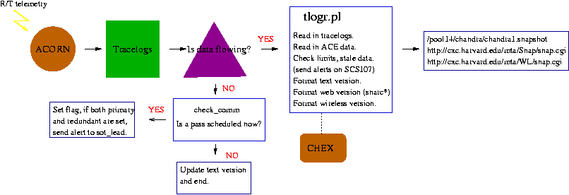

The Chandra Snapshot creation is controlled by tlogr.pl. It takes
tracelogs of real-time telemetry values output from ACORN and
produces a text version, web version, and wml version of
selected values, while doing some limit checking. Tlogr first
checks for new telemetry. If any tracelogs have been updated in the past 3
minutes, we will produce an updated web page. If there is no new
data flowing, we check the comm schedule to confirm that there should be
no data, then update the radiation values (top line of snapshot) in the
text version and exit. If data, should be flowing but is not, a flag is set.
If no data is seen on neither the primary or redundant site after a certain
amount of time an alert is sent. tlogr.pl controls the alert sending, while
subroutine check_comm in snap.pm does the actual checking.
If data is flowing tlogr makes calls to procedures in snap.pm to collect
the data into an associative array. There are some computations such as
EPHIN rates to be performed
next, see comps.pm. Then limits are checked by procedures defined by
check_state.pm. We also incorporate the Chex.pm module from Tom Aldcroft
to check configuration dependent values like SIM position, RA, Dec, and Roll.
The parameter file snaps2.par defines which mnemonics are checked and how
there are checked.
Finally, snap_format.pm contains the instructions to write output.
snap.cgi displays the web page.
It collects the current data for the top line displayed (ACE, Alt., etc.)
and reads in the stored archive of telemetry values (snarc* files).
The cgi allows browsing to previous real-time epochs (back to three days).
The State of Health Pages operate on similar principles with 2 ACORN feeds
and a tlogr for each page (Top, CCDM,PCAD,...). They create static web pages,
overwriting the previous version. There is no cgi to access previous
pages.
